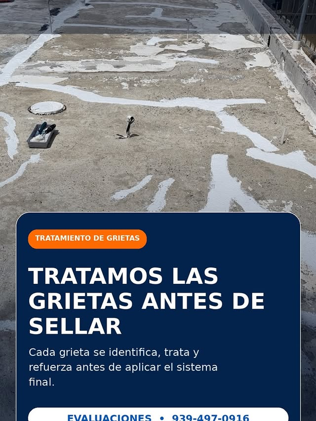
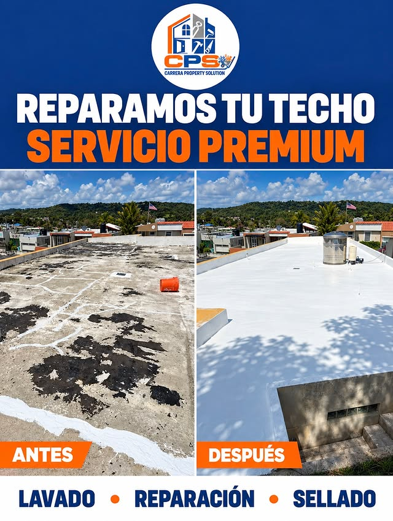
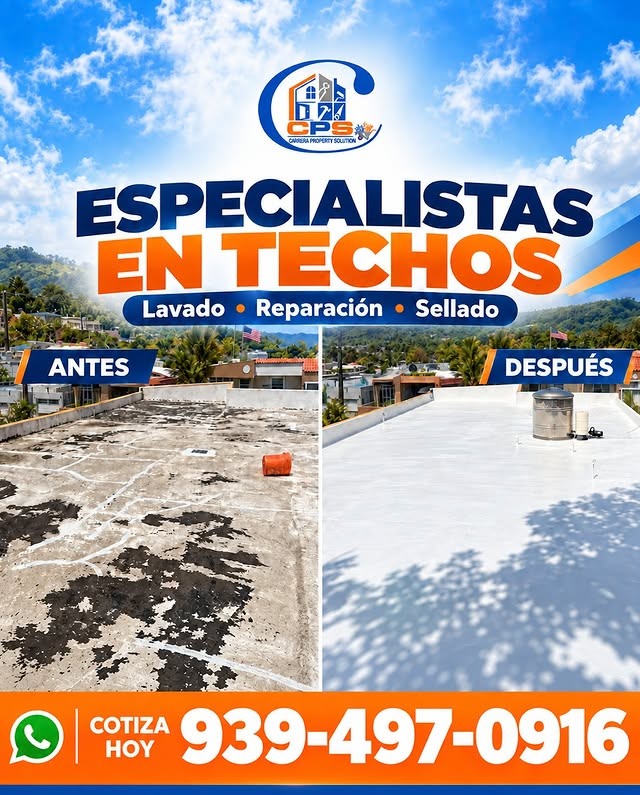
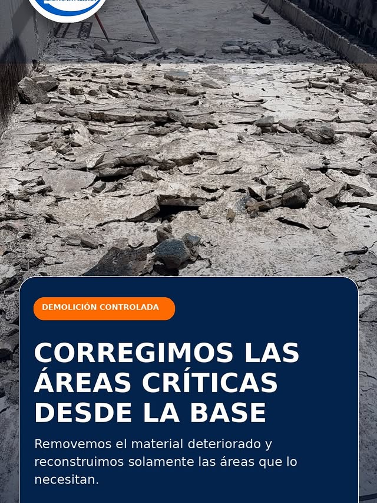
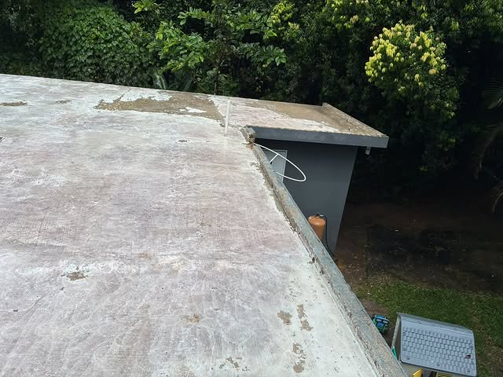
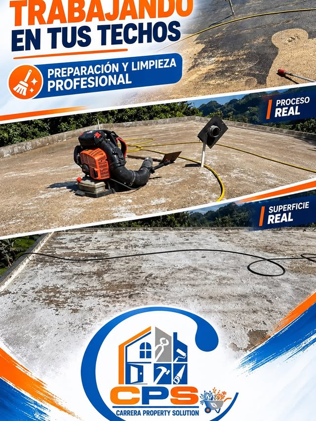
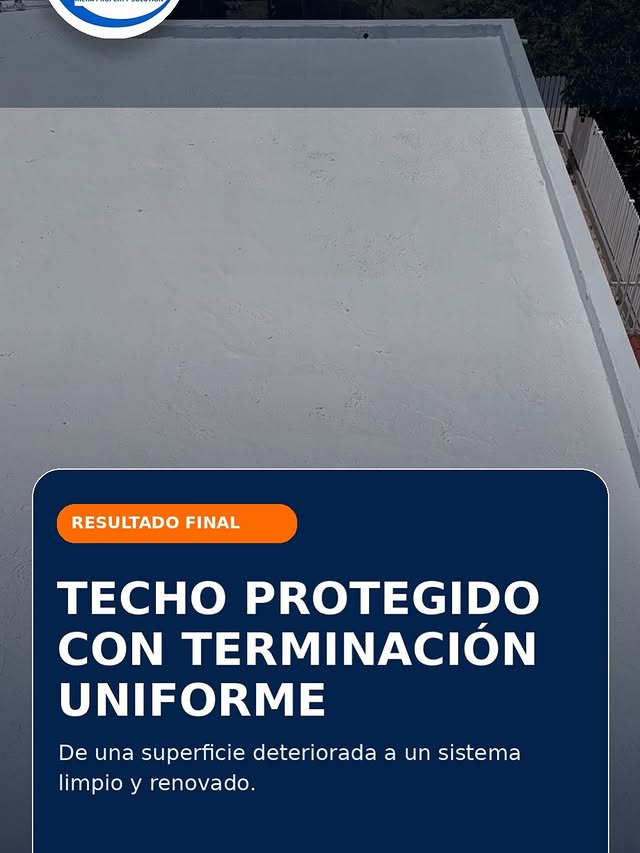

Ciales · Puerto Rico
Sellado, reparación y lavado de techos con el proceso completo: lavado, reparación y sellado.

Lo que hacemos
Protección completa contra filtraciones con sistemas de sellado profesionales.

Limpieza profunda del techo antes del sellado para una adherencia perfecta.
Corregimos daños, áreas críticas y material deteriorado desde la base.

Tratamos cada grieta y punto de empozamiento antes de aplicar el sellado.

Planes de mantenimiento para extender la vida de tu techo.
Galería






Quiénes somos
Carrera Property Solutions: sellado, reparación y lavado de techos en Ciales y Puerto Rico. Nos especializamos en corregir grietas y empozamientos desde la base, con el proceso completo: lavado a presión, reparación y sellado.
Llamar 939-497-0916Preguntas frecuentes
Estamos en Ciales, Puerto Rico.
Sellado de techos, lavado a presión y reparación y más: Sellado de techos, Lavado de techos a presión, Reparación de techos.
Escríbenos por WhatsApp al 939-497-0916 o llena el formulario de contacto y te respondemos por WhatsApp.
Sí, síguenos en Instagram como @carrera_property_solution.
Sí, lavado a presión, reparación y sellado: el proceso completo en Ciales y alrededores.
Tu techo en 3 pasos
Sellado de techos, lavado a presión y reparación · @carrera_property_solution · Ciales y todo Puerto Rico